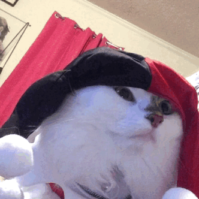
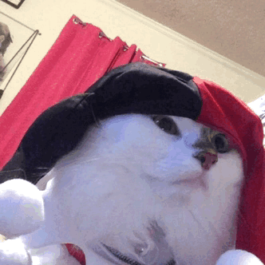

THE GOAT: The Greatest Cat that has ever lived
S'moretholomuel Griggs
AKA S'more
 

click images to take S'more to the park

S'more's journey into our lives started way back in the year 2015. Nathan and I had unfortunately lost our first cat Winston and we had finally decided that we were ready to try adopting again for our one year anniversary. Nathan and I had visited the local shelter but we just didn't find one that clicked with us. A mutual friend of ours posted that she was fostering some kittens for a local cat shelter called 9 lives Cat Rescue with some adorable pictures of the kittens. There were multiple kittens and one of them was a fluffy white one named Mozart. He obviously had his name changed upon adoption because I couldn't take a cat named Mozart seriously.
S'more is an amazing cat. He is fluffy, elegant, loving, and very kind. He misses us when we are away that he will be the first one to furn up and greet us when we return. He loves to be asked to be picked up by reaching up for you to grab him. He always makes sure to place his face on my face while I sleep so that he may keep me warm and watch over me. S'more gets excited to wear costumes that he will purr very loudly when he is in one. When I wake up in the morning, he is there to rub his face on me to wake me up and purr happily that you are awake. He loves to go for walks in the park in his stroller or in his back pack and he will let you know when he wants to go. I have never had a cat quite like him. He is also currently competing to be America's favorite pet!